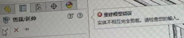

SOLIDWORKS-Q&A
类Range的Activate方法无效
类Range的Activate方法无效，其实出现此问题的原因为Excel的加载项和SOLIDWORKS冲突。
解决方法为：打开Excel，选择选项，在加载项中，选择COM加载项，转到。取消勾选Officeplus加载项,点击确定。
sldedb初始化错误
内存不足或尝试从标准文件”C:\…\HoleWizardFavorites.sldedb”初始化数据来源时发生其它错误
方法1：重置sldedb文件
找到提示路径（C:\…\HoleWizardFavorites.sldedb）下的HoleWizardFavorites.mdb文件，把其删除，该功能正常使用
方法2：确定版本
使用后正常电脑的HoleWizardFavorites.mdb或.sldedb
3DE
书签保存
Q2025新功能“使用书签保存检查文件 ”，如果没有3DE账号或角色。是否有效？
A
CAD出现的依据是什么？
装配体类
替换零部件
替换零部件是替换一个还是全部
和替换零部件应用所有实例有关
去掉后缀
Q：能把虚拟零部件的^后缀去掉嘛？
A：分2部分说明：1、设计树名称可以在零部件右键【属性-零部件名称】修改，2、这种修改只会在设计树生效，在打开的零件界面或BOM表明细里，还是带^符号的。
CAD系列
Q：两个子装配体，就会发生一个子装配体就会有问题，内部零部件偏位，形状变化
A：同名零件，他会用已打开的零件，如果那个零件坐标位置不一样，后打开的装配体就会跑偏。这个CAD系列是在2025后出现，其出现的依据是什么？

图１：是否和上传到3DE云后，下载就会按CAD系列配置来；
图２：是新建的文件，就和旧版本的配置一样

Q：实体不相互完全剪裁
A：把允许延伸勾掉就好了
Q：目前在SOLIDWORKS 2021 SP5.1软件中，目前发现：使用搜狗输入法的全半角会影响软件内键盘的使用。SOLIDWORKS键盘快捷键失灵无效
A：半角：使用正常；全角：使用异常。快捷键无法响应。
Q：剖面视图，分区灰色-需要图形显卡才支持